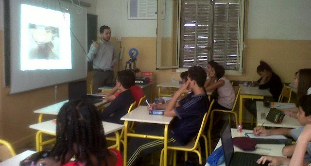
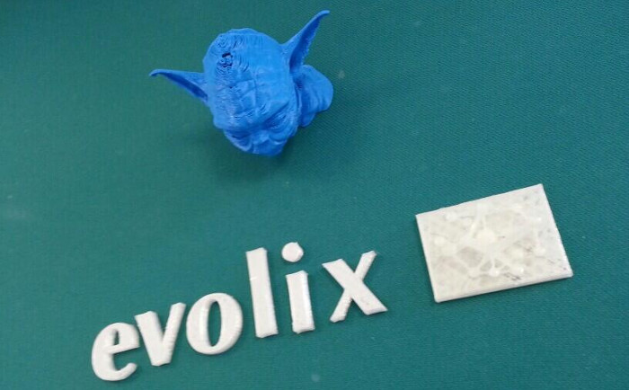

Soirée #Geekbidouille de Juin
Sébastien NEDJAR
Soirée #Geekbidouille de Juin

- Actualité
- Quentin nous parlera du développement de logiciel critique.
- Jonathan montrera des exemples de réalisations faites avec l’Arduino Zero.
Avant l’actu prenons du recul (1/3)
- L’association LAB a aujourd’hui un an
- En une année, nous sommes passés de quelques dizaines de bidouilleurs à une centaine d’adhérents.
- Près de 30 000 écrous échangés.
- Plus de 60 meetups.
Avant l’actu prenons du recul (2/3)
- 10 soirées #geekbidouille
- Plus de 50 personnes à chaque soirée
- 12,26 Visiteurs uniques par permanences
- 9,36 Personnes en même temps dans le LAB pendant les permanences
Avant l’actu prenons du recul (3/3)
- Des centaines d’èlèves qui ont découvert le monde des Makers
- 4 conférences et hackathons valorisant notre communauté
- 13 ateliers de découverte
- 38 articles sur le blog
- 63 pages sur le wiki
- Beaucoup de plaisir à partager et à échanger avec des bidouilleurs tous plus fous les un que les autres.
- Intervention au collège Belsunce
- Animation de la soirée d’anniversaire d’Evolix
- L’été du LAB
Intervention au collège Belsunce

Animation de la soirée d’anniversaire d’Evolix

- L’IUT fermera totalement du 25/07 au 25/08
- Le LAB fermera officiellement à partir du 11/07
- D’ici là n’hésitez pas à venir pour faire avancer vos projets pendant que vous aurez plus de temps.
- Les ouvertures supplémentaires seront annoncées directement sur le groupe meetup